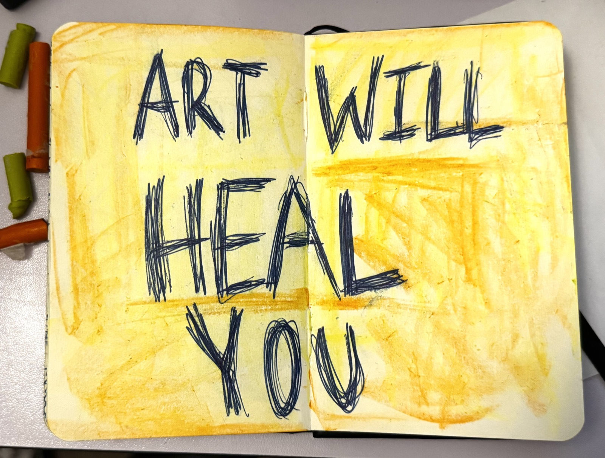
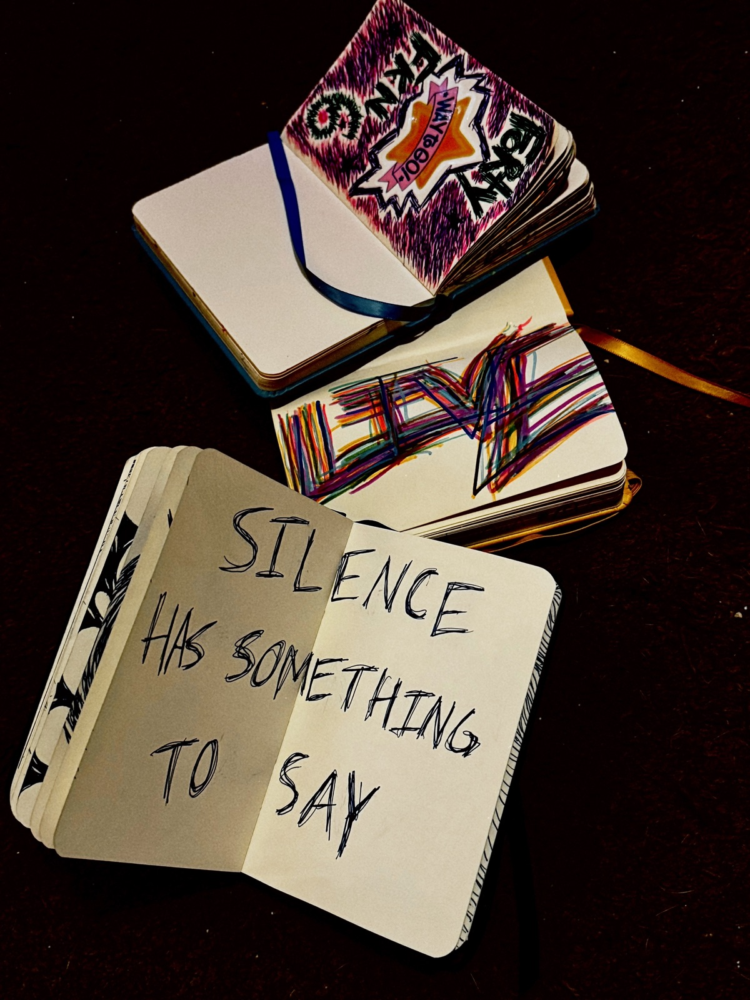
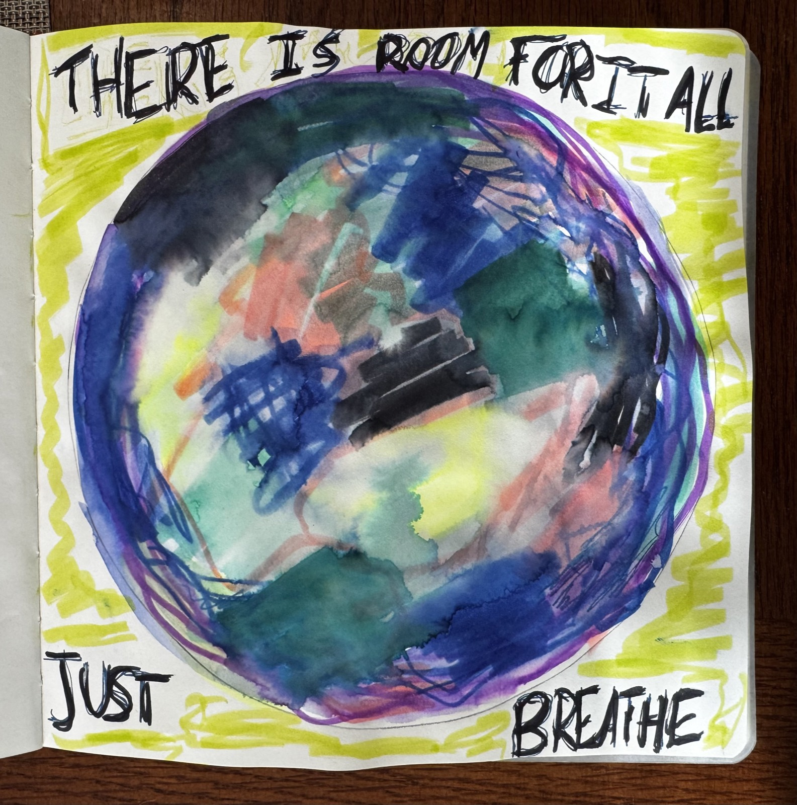
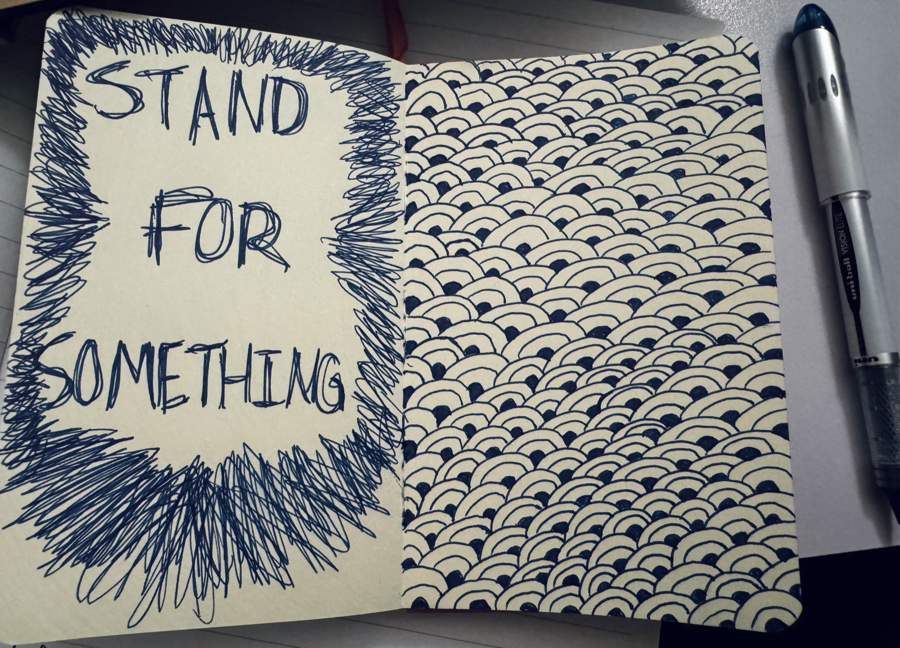
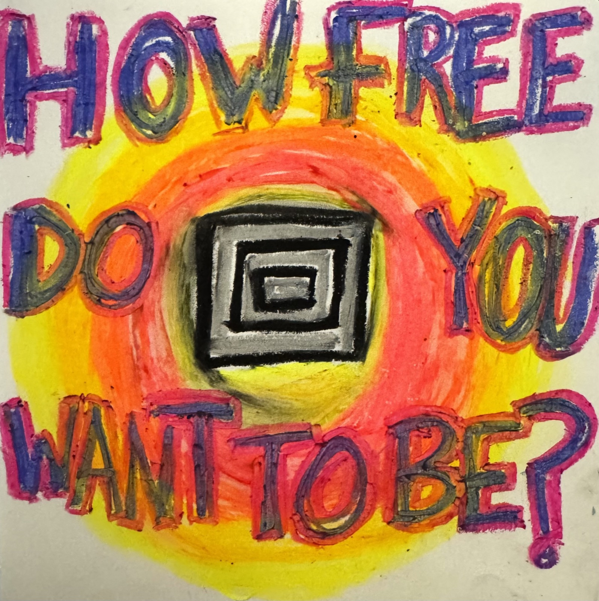

Static to Signal
A 30-day art journaling course you move through one day at a time.
You keep saying you'll get back to making art.
You bought the journal. Maybe a few of them. You follow the artists, you save the reels, you think about it in the shower. And then the day fills up. The journal stays on the shelf. You scroll past someone else's work and feel that little pull, then close the app and move on.
Thirty days from now you're either still scrolling, or you're someone who makes art again.
"Art is for everybody. I'm proof of that."
— Penny
How It Works
Thirty days. One small prompt a day. Delivered to your inbox so you don't have to plan, remember, or feel inspired first.
No videos to sit through. No app to learn. No falling behind. Just open the email, make the thing, close the journal.
You don't have to be good at art for it to be good for you.

Who This Is For
You process everything internally. You've always been a little quiet about the real stuff. You're the one who holds it together, and somewhere under that you're tired in a way sleep doesn't fix.
You already suspect what I know for certain: that making something with your hands does something for you that talking about it doesn't. You just need a way in that doesn't ask you to be impressive.

"I thought all art had to be conventionally good, otherwise it wasn't art. Now I have more freedom to draw and less judgement of what it's supposed to look like."
— Anthony
What Actually Happens
Every morning for thirty days, you get one email. Inside is one prompt, small enough to do in ten or fifteen minutes, built to give you somewhere to put what you're carrying.
The prompts move through four weeks:
- Week 1 gets you creating again. We build the habit of showing up to the page. The point is doing it daily, not doing it well.
- Week 2 is where you notice all the ways you checkout. The scrolling, the busyness, the giving until there's nothing left. You start seeing where you abandon yourself, on the page and everywhere else.
- Week 3 is about staying instead of escaping. When the pull to numb out or fix or perfect something shows up, you practice sitting with it and giving it a place to go instead.
- Week 4 makes it yours so that on day 31 you're not finished, you're just someone with a practice now.
You keep every prompt. You go at your own speed. Fall behind and there's no behind to fall from, the emails are yours to open whenever.

"At first I was a little nervous because I don't consider myself artistic, but I quickly realized it wasn't about making perfect art. It was about being creative and honest with myself. Now I use art journaling as a way to relax, clear my mind, and check in with myself when life gets busy. I feel more creative, less stressed, and more connected to my emotions than I did before. I'd recommend it to anyone, even if they don't think they're artistic."
— Carli
Why Me
I'm Bethanie. I'm a licensed art therapist and I've spent a decade making art with people in addiction recovery, with cancer patients, with older adults, with anyone who'd stopped believing art was for them.
I also need this myself. I got sober, then got sick with an autoimmune disease no one could explain, and the thing that brought me back to my own body was making one small piece of art a day. Not talent or a finished masterpiece, but putting in the reps. I still make art this way, and I still need it.
I built Static to Signal out of exactly what worked for me and for the hundreds of people I've made art with since.
A note on what this is and isn't: this is a creative practice, not therapy or treatment. I'm here as an artist and a guide, not as your clinician. If something surfaces that needs more support, seek professional guidance.
"I grew up believing that to make art you needed a certain level of skill or technique. Through Bethanie, I've learned that art can be literally anything you need it to be. The more you allow yourself to put your inner world onto a canvas, the more your outer world changes."
— Clayton
What You Get
- 30 daily prompts, one per day, delivered through the course
- Yours to keep and repeat as often as you want
- Fully self-paced, no live calls, no schedule, no pressure
- A private way in to a bigger room of weird, honest artists if you want it later

$99
One time, yours forever.
Less than the price of all those journals sitting on your bookshelf with one page written in.

The Guarantee
Make all thirty days of art. Send me the images. If it didn't move anything for you, I'll refund you in full.
FAQ
I'm not creative.
Everyone quoted on this page said that before they started.
How long does this take?
As long as you've got. Five minutes is fine. The recommended time to settle your nervous system is 20 minutes or more. But making art for five minutes is better than not creating at all.
What supplies do I need?
Whatever you have! Pen and paper. Markers. Crayons. Old magazines. Junk mail. The course includes a full supply guide, but you don't need fancy materials.
What if I miss a day?
You probably will! Everyone does. The practice isn't about perfection, it's about showing up when you can. This is a practice. Don't beat yourself up! Just jump back in!
Are you saying art cured your autoimmune disease?
No. I changed a lot at once. What I'll say is that stress makes autoimmune symptoms worse, and making art brought my stress down further than anything else I tried, and my disease is in remission. I'm telling you what happened to me, not what will happen to you.
Is this therapy?
No. This is an educational course teaching you art journaling techniques. It's not clinical treatment. If you're in crisis or need therapeutic support, please work with a licensed professional.
Start Where You Are
You don't need to feel ready. You don't have to be inspired. You don't have to be "good."
Thirty days from now, you'll either still be waiting, or you'll have a practice that will change your life.